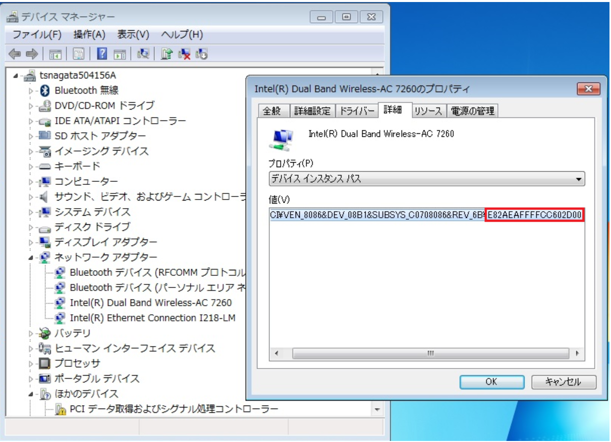

本記事は 2018 年 3 月 19 日に公開された記事を本ブログに移行した記事になります。
こんにちは。Windows プラットフォーム サポートです。
Windows 7、Windows Server 2008 R2 で 2018 年 3 月公開の更新プログラム (KB4088875 または 4088878 または KB4088881 または KB4099467) のいずれかを適用すると、無線 LAN および有線 LAN 利用時において後述の問題が発生することが判明しましたので、本 Blog でご案内します。
・March 13, 2018―KB4088875 (Monthly Rollup)
https://support.microsoft.com/en-us/help/4088875
・March 13, 2018―KB4088878 (Security-only update)
https://support.microsoft.com/en-us/help/4088878
・March 23, 2018—KB4088881 (Preview of Monthly Rollup)
https://support.microsoft.com/en-us/help/4088881
・Stop error 0xAB when you log off a Windows 7 SP1 or Windows Server 2008 R2 SP1 session
https://support.microsoft.com/en-us/help/4099467
また、Windows Server 2008 でも 2018 年 3 月 14 日公開の更新プログラム (KB4089229) を適用すると、有線 LAN 利用時に問題が発生することが判明しましたので、以下の Blog で別途ご案内します。
3 月の更新プログラムを適用すると有線 LAN 利用時に問題が発生する (Windows Server 2008) https://blogs.technet.microsoft.com/jpntsblog/2018/03/26/lan_problem_after_update_3b_2k8/
[ 問題の概要 ]
Windows 7 / Windows Server 2008 R2 に KB4088875 または KB4088878 または KB4088881 または KB4099467 を適用すると、以下のような問題が発生することがあります。
・ネットワーク インターフェースに静的に設定した IP アドレス情報が失われ、DHCP 設定に置き換わる。
・ステルスモードの SSID への接続用の無線プロファイルが表示されなくなる。
・無線 LAN アダプターが無効化される、利用できなくなる。
本問題について、以下の技術情報と更新プログラム (KB4099950) を公開しました。
・Network Interface Card settings can be replaced, or static IP address settings can be lost
https://support.microsoft.com/en-us/help/4099950
[ 対象 OS ]
Windows 7 SP1
Windows Server 2008 R2 SP1
[ 原因 ]
3 月の更新プログラムを適用すると、OS の pci.sys ドライバーが更新され、pci.sys の過去の修正が累積して適用されます。
pci.sys の過去の修正のうち、本問題は KB2550978 の更新プログラムが契機となって発生します。
(KB2550978 以降のバージョンの pci.sys が既に適用されている場合は、本問題は発生しません)
・”0x0000007B” Stop error after you replace an identical iSCSI network adapter in Windows Server 2008 R2 SP1 or in Windows 7 SP1
https://support.microsoft.com/en-us/help/2550978
KB2550978 では、PCI Express Serial Number Capability をサポートしている NIC を使用している環境で、NIC を交換した (NIC の Serial Number が変化した) 場合にも、それまで使用していたネットワーク設定を利用できるようにするために pci.sys の動作を修正しています。
この修正を適用することで、以前の古い NIC 用のネットワーク設定が再度利用され、本問題が発生することがあります。
[ 発生条件 ]
以下の 2 つの条件を両方満たす場合に、本問題が発生することがあります。
a. pci.sys のバージョンが 6.1.7601.17630 未満 (GDR 版の場合) または 6.1.7601.21744 未満 (LDR 版の場合) であること (*)
b. NIC が PCI Express Serial Number Capability をサポートしていること
(*) GDR 版の場合は 6.1.7601.1xxxx、LDR 版の場合は 6.1.7601.2xxxx となりますので、GDR 版か LDR 版のどちらであるかは、最後の 5 桁の先頭の数字 (1 か 2) で区別します。
上記いずれかの条件を満たさない場合には、本問題は発生しません。
また、Hyper-V の仮想マシンでは、“ネットワーク アダプター”、”レガシ ネットワーク アダプター” とも上記 b に該当しないため、本問題は発生しません。
[ 今後の対処方法 ]
・Monthly Rollup を適用する場合
4 月の Monthly Rollup KB4093118 には、本問題の対策が含まれますので、KB4093118 を適用することで本問題は発生しません。
ただし、2018 年 4 月 10 日公開時点の KB4093118 のパッケージには問題が存在したため、WSUS / SCCM 環境の場合、2018 年 4 月 12 日公開のパッケージを配布ください。
4 月以降の Monthly Rollup には、今後も本問題の対策が含まれます。
・Security-only update を適用する場合
3 月の Security-only update KB4088878 を適用する場合、その前提 KB となっている本問題の対策 KB4099950 を事前に適用する必要があります。
また、WSUS / SCCM で更新プログラムを配信する環境では、予期せぬ適用を防ぐため、KB4099950 が適用されていない場合には KB4088878 が検出されないように前提条件が付けられております。
なお、WSUS / SCCM 環境において、KB4099950 と KB4088878 をまとめて配布する場合は、自動的に KB4099950 が先に適用されます。
ただし、2018 年 4 月 2 日公開時点の KB4099950 のパッケージには問題が存在したため、WSUS / SCCM 環境の場合、2018 年 4 月 17 日公開のパッケージを配布ください。
また、4 月の Security-only update KB4093108 には、pci.sys の更新が含まれないため、本問題は発生しません。
4 月以降の Security-only update に pci.sys の更新が含まれた場合にも、本問題の対策 KB4099950 を一度適用しておくことで、今後も本問題は発生しません。
[ 復旧方法 ]
3 月の更新プログラム (KB4088875 または KB4088878 または KB4088881 または KB4099467) を適用後に既に問題が発生している場合、以下の手順で復旧します。
・ネットワーク インターフェースに静的に設定した IP アドレス情報が失われ、DHCP 設定に置き換わった場合、
新たに生成されたネットワークアダプターに必要なネットワーク設定を行います。
・ステルスモードの SSID への接続用の無線プロファイルが表示されなくなった場合、
無線プロファイルを構成し直します。
・無線 LAN アダプターが無効化された場合、
下記手順を実施します。
1．コントロールパネルを表示します。
2．[システムとセキュリティ] － [ハードウェアとサウンド] - [デバイス マネージャー] を選択します。
3．[コンピュータ名]－[ネットワークアダプター]－[利用中の無線 LAN デバイス] を右クリックし、[有効] を選択します。
[有効] と表示されない場合、[削除] を選択します。
4．OS を再起動します。
[ 参考情報 ]
本問題の発生条件に該当するかどうか確認する場合は、以下の手順を実施します。
(1) pci.sys のバージョンを確認します。
コマンドで確認する場合、以下を実行します。
wmic datafile where name=”C:\Windows\system32\drivers\pci.sys” get version /value
以下の例 (GDR 版の例) のように、pci.sys のバージョンが 6.1.7601.17630 以降である場合、本問題は発生しません。
(LDR 版の場合には、pci.sys のバージョンが 6.1.7601.21744 以降である場合、本問題は発生しません。)
以下の例 (GDR 版の例) のように、pci.sys のバージョンが 6.1.7601.17630 未満である場合、本問題が発生し得ますので、(2) の確認に進みます。
(LDR 版の場合には、pci.sys のバージョンが 6.1.7601.21744 未満である場合、本問題が発生し得ますので、(2) の確認に進みます。)

(2) NIC が PCI Express Serial Number に対応しているか、確認します。
(2-1) コマンドで確認する場合、以下を実行します。
wmic path win32_pnpentity where ClassGUID=”{4d36e972-e325-11ce-bfc1-08002be10318}” get DeviceID | find /i “PCI”
以下の例では、2 つの NIC が搭載されています。
上側は Serial Number に非対応の NIC で、デバイス インスタンス パスで最後の “\” の後に “&” を含む形式となります。
下側は Serial Number に対応の NIC で、デバイス インスタンス パスで最後の “\” の後に “&” を含まず、Serial Number が付加される形式となります。
(2-2) デバイス マネージャーで確認する場合、NIC のデバイス インスタンス パスを確認します。
以下の例では、NIC のデバイス インスタンス パスで最後の “\” の後に “&” を含まず、Serial Number が付加される形式となっていますので、Serial Number に対応している NIC です。

Serial Number に非対応の NIC をご利用の場合、本問題は発生しません。
Serial Number に対応している NIC をご利用の場合、本問題が発生し得ます。
[ FAQ ]
Q1. Windows 7、Windows Server 2008 R2 以外の OS でも発生するか。
A1. Windows Server 2008 で発生する事象については、以下の Blog を参照ください。
3月の更新プログラムを適用すると有線 LAN 利用時に問題が発生する (Windows Server 2008) https://blogs.technet.microsoft.com/jpntsblog/2018/03/26/lan_problem_after_update_3b_2k8/
Q2. 既に KB4088875 または KB4088878 または KB4088881 または KB4099467 をインストールして問題が発生していない場合、アンインストールする必要があるか。
A2. インストール後に問題が発生していない場合、問題発生条件を満たしていない環境であるため、アンインストールする必要はありません。
Q3. DHCP を利用している環境の場合、本問題が発生するか。
A3. 有線 LAN で DHCP を利用している環境の場合、実害は発生しません。
[ 参考情報 ]
・Security update deployment information: March 13, 2018
https://support.microsoft.com/en-us/help/20180313
・March 13, 2018―KB4088875 (Monthly Rollup)
https://support.microsoft.com/en-us/help/4088875
・March 13, 2018―KB4088878 (Security-only update)
https://support.microsoft.com/en-us/help/4088878
・March 23, 2018—KB4088881 (Preview of Monthly Rollup)
https://support.microsoft.com/en-us/help/4088881
・Stop error 0xAB when you log off a Windows 7 SP1 or Windows Server 2008 R2 SP1 session
https://support.microsoft.com/en-us/help/4099467
・Network Interface Card settings can be replaced, or static IP address settings can be lost
https://support.microsoft.com/en-us/help/4099950
[ 関連情報 ]
3 月の更新プログラムを適用すると有線 LAN 利用時に問題が発生する (Windows Server 2008) https://blogs.technet.microsoft.com/jpntsblog/2018/03/26/lan_problem_after_update_3b_2k8/
[ 更新履歴 ]
2018/03/19 : 本 Blog の公開
2018/03/26 : 本 Blog の更新
2018/04/02 : 本 Blog の更新 (KB4099950 について追記)
2018/04/04 : 本 Blog の更新 ((KB4099467 について追記)
2018/04/05 : 本 Blog の更新 (対処方法、FAQ を更新)
2018/04/06 : 本 Blog の更新 (KB4099950 が “オプション” から “重要” に変更)
2018/04/13 : 本 Blog の更新 (対処方法を更新)
2018/04/16 : 本 Blog の更新 (KB4099950 の修正版の公開予定時期を更新)
2018/04/19 : 本 Blog の更新 (対処方法、FAQ を更新)
2018/10/18 : 本 Blog の更新 (対処方法について追記)
[ 特記事項 ]
本情報の内容（添付文書、リンク先などを含む）は、作成日時点でのものであり、予告なく変更される場合があります。